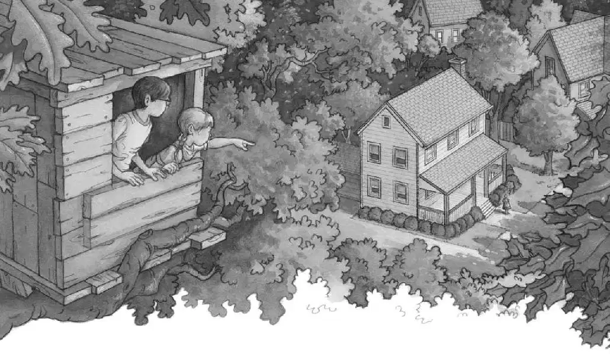
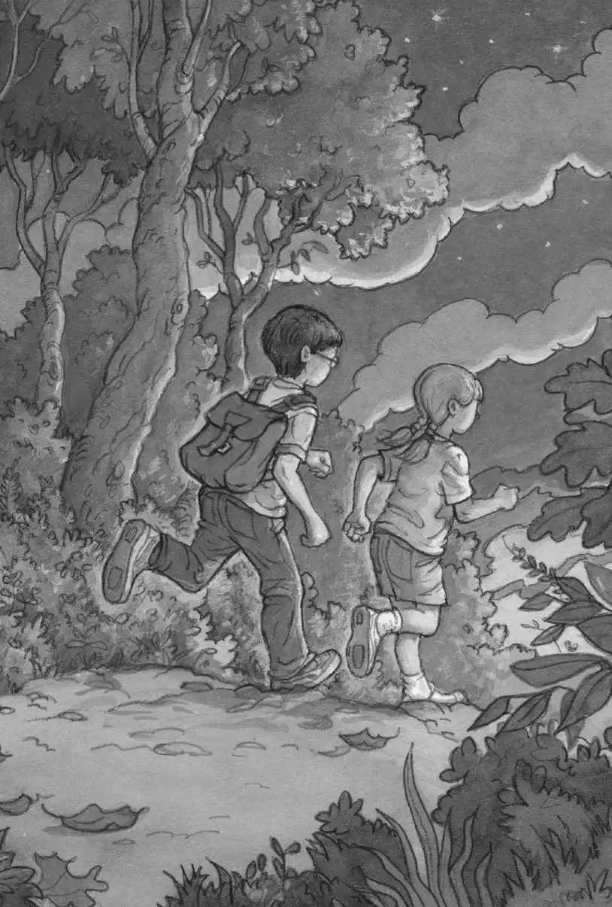

Jack heard a bird singing.
He opened his eyes. He was still pointing at the picture of the Frog Creek woods.
He peeked out the tree house window. Outside he saw the exact same view as the picture in the book.
“We’re home,” whispered Annie.
The woods were lit with a golden late-afternoon light. The sun was about to set.
No time had passed since they’d left Frog Creek.

“Ja-ack! An-nie!” a voice called from the distance.
“That’s Mom,” said Annie.
Jack saw their mother far away. She was standing in front of their house. She looked tiny.
“An-nie! Ja-ack!” she called.
Annie stuck her head out the window and shouted, “Coming!”
Jack still felt dazed. He just stared at Annie.
“What happened to us?” he said.
“We took a trip in a magic tree house,” said Annie simply.
“But it’s the same time as when we left,” said Jack.
Annie shrugged.
“How did it take us so far away?” said Jack. “And so long ago?”
“You looked at a picture in a book and said you wished we could go there,” said Annie. “And the magic tree house took us there.”
“But how?” said Jack. “And who built this magic tree house? Who put all these books here?”
“A magic person, I guess,” said Annie.
“Oh, look,” said Jack. “I almost forgot about this.”
Jack reached into his pocket and pulled out the gold medallion. “Someone lost this back there,” he said, “in dinosaur land. Look, there’s a letter M on it.”
Annie’s eyes got round. “You think M stands for magic person?” she asked.
“I don’t know,” said Jack. “I just know someone went to that place before us.”
“Ja-ack! An-nie!” their mom called again.
“Coming!” Annie shouted again.
Jack put the gold medallion back in his pocket. He pulled the dinosaur book out of his pack and put it back with all the other books.
Then he and Annie took one last look around the tree house.
“Good-bye, house,” whispered Annie.
Jack slung his backpack over his shoulders. Annie started down the rope ladder. Jack followed.
Seconds later they hopped onto the ground and started walking out of the woods.
“No one’s going to believe our story,” said Jack.
“So let’s not tell anyone,” said Annie.
“Dad won’t believe it,” said Jack.
“He’ll say it was a dream,” said Annie.
“Mom won’t believe it,” said Jack.
“She’ll say it was pretend.”
“My teacher won’t believe it,” said Jack.
“She’ll say you’re nuts,” said Annie.
“We’d better not tell anyone,” said Jack.
“I already said that,” said Annie.
Jack sighed. “I think I’m starting not to believe it myself,” he said.
They left the woods and started up the road toward their house.
As they walked past all the houses on their street, the trip to dinosaur time did seem more and more like a dream.
Only this world and this time seemed real.
Jack reached into his pocket. He clasped the gold medallion.
He felt the engraving of the letter M. It made his fingers tingle.
Jack laughed. Suddenly he felt very happy.
He couldn’t explain what had happened today. But he knew for sure that their trip in the magic tree house had been real.
Absolutely real.
“Tomorrow,” Jack said softly, “we’ll go back to the woods.”
“Of course,” said Annie.
“And we’ll climb up to the tree house,” said Jack.
“Of course,” said Annie.
“And we’ll see what happens next,” said Jack.
“Of course,” said Annie. “Race you!”
And they took off together, running for home.
